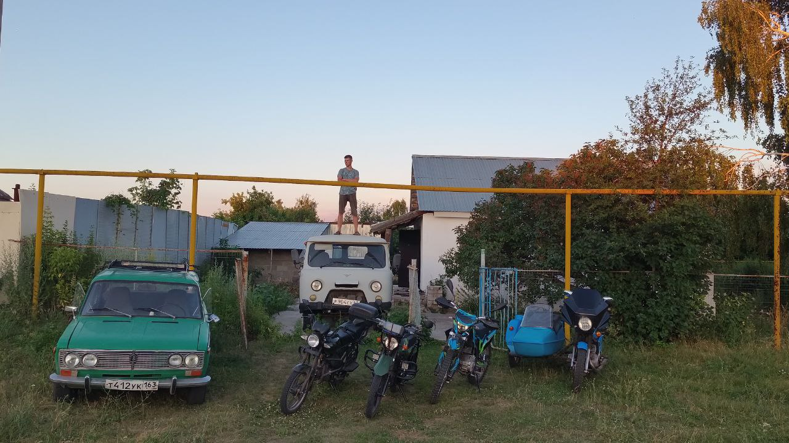

Макаров Сергей Андреевич
- Очень, очень хороший мальчик
- Вежлив, правдив, скромен, добр
- Слушает маму
- Каждое утро делает зарядку
- Характер очень мягкий
Дата рождения: 14 апреля 2006 г.
Любимые увлечения: диагностика автомобилей (особенно VAZ), программирование на Python, сборка ПК, ручная переноска изображений на дерево (прибором для выжигания).
Hard-скилы: Python, CSV-обработка, Git, Linux, диагностика ДВС, настройка карбюратора.
Soft-скилы: аналитическое мышление, самодисциплина, внимание к деталям.
GitHub: github.com/123321zZzZ
О себе: Студент 2 курса Самарского университета по направлению «Информационная безопасность автоматизированных систем» (ИБАС). Увлекаюсь программированием (Python, C++), сборкой и модификацией ПК, диагностикой автомобилей.